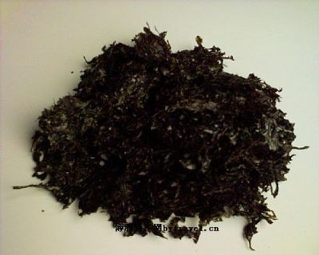
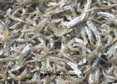
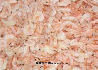
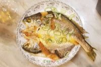

象山紫菜
紫菜养殖在象山已经有30多年历史，全县拥有养殖面积1.6万余亩，是海水养殖主导产品之一随着养殖技术水平的提高和市场需求的增多，养殖面积逐年扩大，形成较大生产规模。目前全县养殖面积1.6万亩，产干紫菜3500多吨。以前鲜菜收割后，大多手工制成菜饼，晒干上市。近年发展机制加工，产品档次提高，菜饼薄嫩光亮、味道鲜美、清洁卫生。 紫菜含有丰富的维生素和矿物质，特别是维生素B12、B1、B2、A、C、E等。它所含的蛋白质与大豆差不多，是大米的6倍；维生素A约为牛奶的67倍，核黄素比香菇多9倍，维生素C为卷心菜的70倍。还含有胆碱、胡萝卜素、硫胺素、烟酸、维生素C、碘等。它具有清热利尿、补肾养心、降低血压，促进人体代谢等多种功效。

海蜒
海蜒，或叫“海艳”，产于渔山列岛清水海域，有200多年捕捞历史，列为海味珍品，素负盛名。海蜒味鲜美，色白，可泡汤、炒蛋炒菜、拌咸菜等。 海蜒在清代被诗人李邺嗣称作“海咸”，且有诗说“一瓶蟹甲纯黄酱，千箸鱼头细海咸”。

虾皮
直接晒制而成的东海特级虾皮, 全淡的生虾皮,北方那边俗称甜晒吧,营养价值非常高，最适合给你的宝宝做菜吃,真正的天然绿色食品。由于晒制的很干,半斤满满一大包，可以吃上一阵子了，超值！ 虾米可即食，也可放汤做菜。虾米酱油汤，味精、猪油、美味鲜酱油开水溃泡，也可虾米煎蛋~是小孩子补钙的极品.
